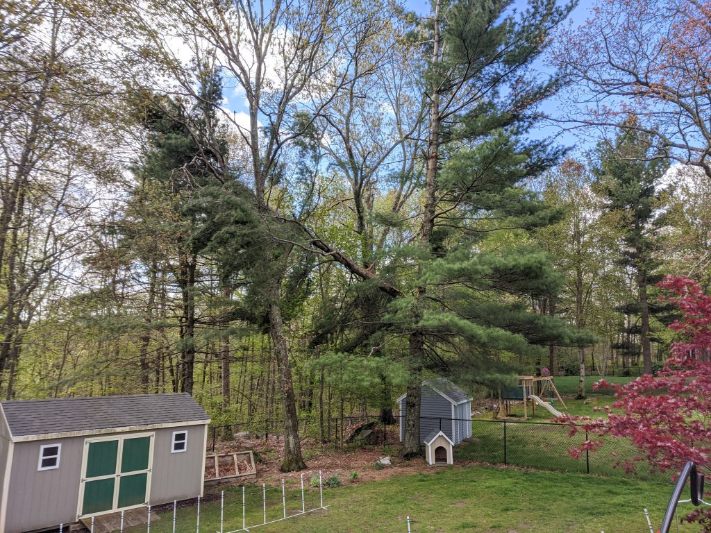
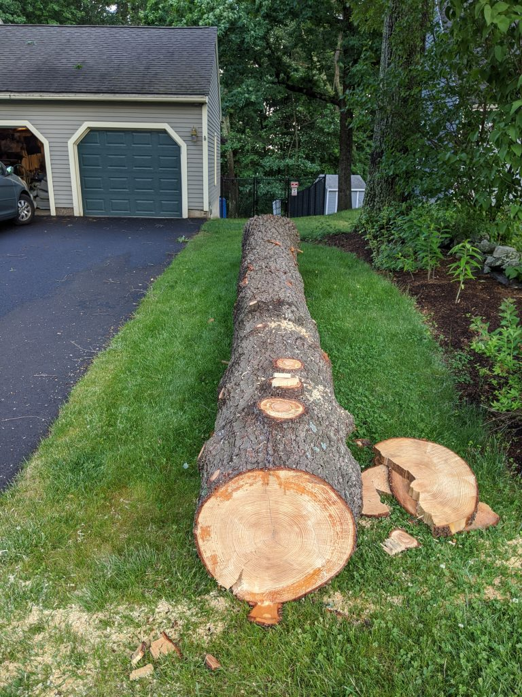
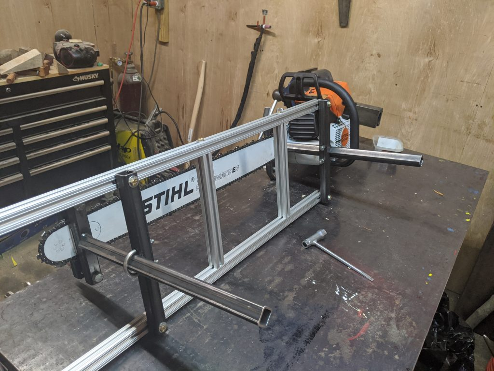
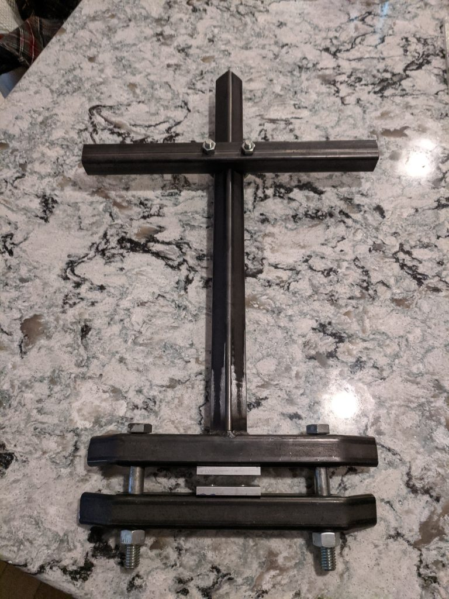

Chainsaw Sawmill ~ 2020 & 2023
During the peak of chaos, the pandemic in 2020, my family's property had a tragic turn of events. A large white pine tree, approximately 75 feet tall, broke in half mid way up left hanging precariously over a garden shed and our yard fence.

The removal of this tree was a sight to see with the use of a 70 ton Liebherr crane boomed out 140 feet to remove the tree without damage to the surrounding property.
While the upper section of the tree was heavy with limbs and fracture damage from the break, the bottom 18 feet was incredibly straight and 28″ in diameter at the butt.

I had seen online an invention called the Alaskan Mill — an attachment for a chainsaw that allows slabs to be cut and lumber to be made.
With the opportunity to turn that wood into something useful, I began looking into building my own version of the Alaskan Mill. I made my version adjustable for different length chainsaw bars, able to cut from ½″ to 16″ in thickness.

I used the Alaskan Mill as inspiration, but made some modifications to better fit my needs.
I used a combination of aluminum extrusion and 1″×1″ steel square tubing. I used the aluminum extrusion for the long cross bars to reduce weight and allow adjustability in the width based on the saw / bar being used. I used square steel tubing for the vertical uprights for the stiffness of the clamp and weldability.
